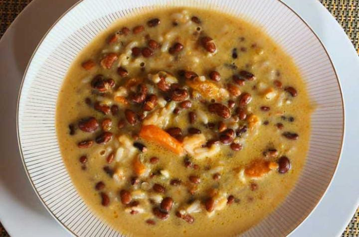

Preparación del Poroto

- Paso 1 :
Remojar los porotos durante 24 horas.
- Paso 2 :
Lavar bien los porotos y llevar a cocción con suficiente agua por unas 2 horas hasta que ablanden.
- Paso 3 :
En una cacerola, con un poco de aceite, sofreír las cebollas, ajo, tomates y pimientos.
- Paso 4 :
Incorporar los porotos cocidos, el perejil picado, sal y pimienta. Añadir el agua y dejar cocinar a fuego medio por 30 minutos.
- Paso 5 :
Luego añada el queso y las cebollas de verdeo picaditas. Retire del fuego.
- Paso 6 :
Sirva bien caliente acompañada de tortillas de maíz.